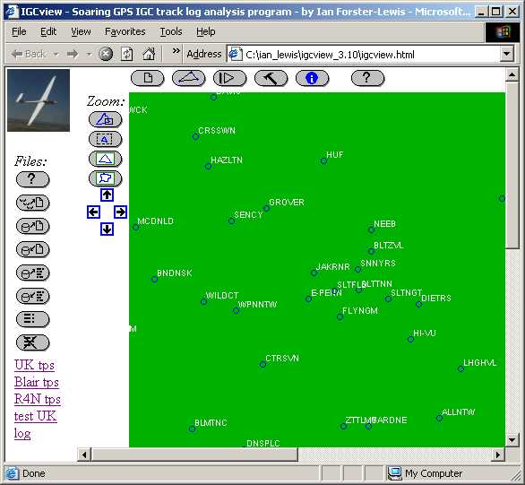
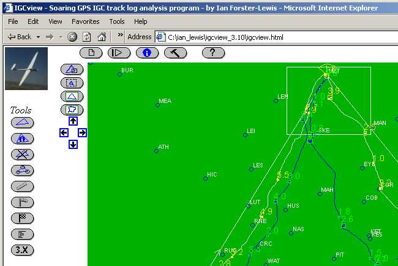
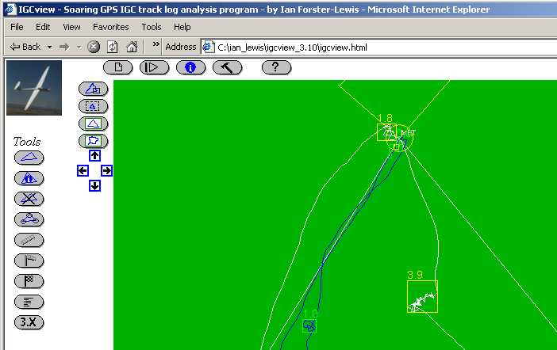
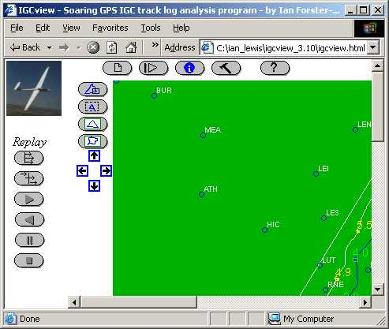
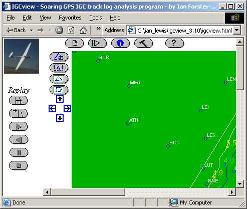

IGCview for DummiesIGCview for Dummies
IGCview for DummiesIGCview for DummiesThis page is intended to guide you through the process of using IGCview in a series of steps, loading multiple IGC files and reviewing and comparing them.
There is additional help, in the usage help file, and a guide to install IGCview locally on your PC the installation notes.
IGCview can be run directly from the website or by copying the program files onto your PC and clicking on the file 'igcview.html'. When you have launched the program, your browser (Internet Explorer or Netscape) will show something like the screenshot in step 1.
Click on igcview.html in the directory you've installed IGCview in, or follow the link on the website (here).
(These screenshots have been resized to fit within this tutorial)
The main rectangular area of the page is the 'map' view, and above it the fixed top row of buttons are the 'main menu' items, in general each will load a new set of buttons down the far left side of the page. On startup, IGCview loads with the 'Files' menu items down the far left side of the page. Another fixed set of buttons is immediately to the left of the map area, allowing you to zoom and pan around the map.
Assuming you have IGCview set up right for your area (see preferences to set your startup turnpoints and map area), the next thing you'll do is load some IGC files for analysis. For this tutorial you can use the IGCview defaults, so maybe worry about that later. To load your IGC files see Step 2.
If you want to look at sample traces right away, click on the
'load file from web' button, click
'UK files', and click 'B21' first and then '729'. Note that the B21 file contains a task
in addition to the flight log. The screen should now look something
like that below (shrunk to fit this page). Go to Step 3.
button, click
'UK files', and click 'B21' first and then '729'. Note that the B21 file contains a task
in addition to the flight log. The screen should now look something
like that below (shrunk to fit this page). Go to Step 3.
If you want to load your own IGC files, then for a detailed explanation of each of the 'Files' buttons, see the 'files' help file.
To 'zoom in' to an area on the map, the easiest way is to click and hold the left mouse button on the top-left corner of the area you want to magnify, and drag the mouse down and to the right until a box is drawn around the area you want to zoom. If you want to zoom in to the top turnpoint in the sample files, then as you drag the mouse the screen will look something like the picture below.
When you release the mouse button, IGCview will snap to a new view with the area you've selected filling the screen. For the example above, the screen will now look something like the screenshot below.
To zoom back out, click the 'zoom out' button. With the test flights loaded, you can now compare the performance of the
two pilots. Go to Step 4.
button. With the test flights loaded, you can now compare the performance of the
two pilots. Go to Step 4.
For a detailed explanation of each of the zoom buttons, see the main usage help file.
With one or more flights loaded, and a task defined, you can get a comparative analysis of
speeds, climb rates and times taken on a per-leg and total task basis by clicking on the
'flight data' button .
.
Scroll down on the main page, and you'll see the IGCgraph applet which can display the barograph trace. The trace will
display when you click the 'alt view' button .
.
Note that the horizintal axis can show either time or distance, by clicking the
 and
and  buttons respectively.
buttons respectively.
The vertical access can show aspects of the flight other than your altitude, for example your climb rate or
cruise speed. Another type of chart to display is your 'climb rate histogram'
( ), which shows the proportion of time
spent climbing at different rates. The vertical axis then shows each 10% of time spend, while the horizontal axis
is in knots (~100fps) or m/s depending on the units chosen in the tools...preferences settings. In the example
below, the primary trace is shown in blue, with the secondary trace for comparison shown as the green background.
The blue line shows that 30% of the thermalling time was bewteen 2 and 2.5 knots, 20% between 3 and 3.5 knots, and
the average climb rate for the primary trace was about 2.6 knots (this average is also seen on the flight data page).
By comparison, the other trace has a significantly better climb profile.
), which shows the proportion of time
spent climbing at different rates. The vertical axis then shows each 10% of time spend, while the horizontal axis
is in knots (~100fps) or m/s depending on the units chosen in the tools...preferences settings. In the example
below, the primary trace is shown in blue, with the secondary trace for comparison shown as the green background.
The blue line shows that 30% of the thermalling time was bewteen 2 and 2.5 knots, 20% between 3 and 3.5 knots, and
the average climb rate for the primary trace was about 2.6 knots (this average is also seen on the flight data page).
By comparison, the other trace has a significantly better climb profile.
 at the top of the page will show the replay options down the
left side of the page. A 'maggot race' is most easily started by clicking the 'synchronized start' button
at the top of the page will show the replay options down the
left side of the page. A 'maggot race' is most easily started by clicking the 'synchronized start' button
 , and can be stopped with the 'stop' button
, and can be stopped with the 'stop' button
 .

.

After clicking the 'tools' button , many useful options will appear down the
left side of the page. Hover the mouse over each option, or click the help button
, many useful options will appear down the
left side of the page. Hover the mouse over each option, or click the help button
 to get information on what these options do.
to get information on what these options do.
To use IGCview, the buttons across the top of the map panel (the green box) in
general cause another set of buttons to appear down the left-hand side
of the page. There is
The top buttons currently are:
 |
The button should be straightforward.
If you want to load a file from you local PC you will have to read the
installation notes. As IGCview can load .igc or gardown tracklog
files, there is also a save file option, which saves the current primary log in the
.igc format, including the current task. This is a convenient way to convert your
gardown (from Garmin GPS) files to .igc, or to embed a task into an existing
.igc file. |
 |
This presents a number of buttons to zoom-in, zoom-out, zoom-to-task, or to zoom to the area covered by the current primary task. Note that in general zooming-in is most easily done by dragging the mouse on the map to open up a box, which IGCview will zoom to fit the screen. |
|
|
|
This the the  to choose between them, e.g. to select a new primary.
to choose between them, e.g. to select a new primary. |
|
This it the |